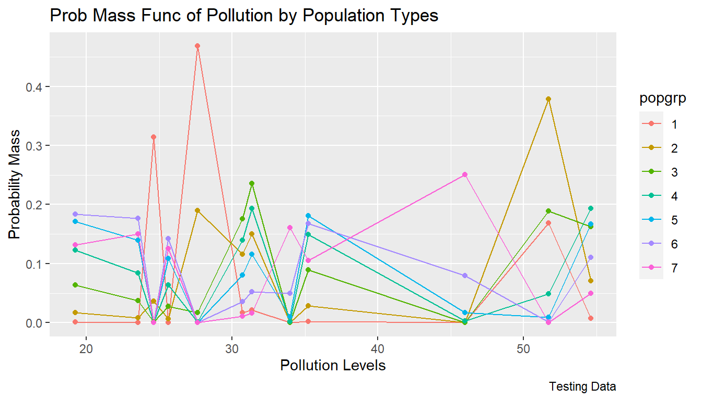

Chapter 8 Mathematics
8.1 Basics
8.1.1 Log with Different Bases and Exponents
Go back to fan’s REconTools Package, R Code Examples Repository (bookdown site), or Intro Stats with R Repository (bookdown site).
8.1.1.1 Log of Bases that Are not 10, 2 and e
What is \(y\) below, with arbitrary base \(x\)? It is \(y=\frac{\log\left(z\right)}{\log\left(x\right)}\), because: \[ \begin{aligned} x^y &= z\\ x^{\frac{\log\left(z\right)}{\log\left(x\right)}}&=z\\ \log\left(x^{\frac{\log\left(z\right)}{\log\left(x\right)}}\right)&=\log\left(z\right)\\ \frac{\log\left(z\right)}{\log\left(x\right)}\log\left(x\right)&=\log\left(z\right)\\ \frac{\log\left(z\right)}{\log\left(x\right)}&=\frac{\log\left(z\right)}{\log\left(x\right)}\\ \end{aligned} \]
Given these, we can compute the exponents, \(y\), for non-standard bases, \(x\), given the value for \(z\).
# base 1.1
x <- 1.1
y <- 5.5
z <- x^y
# given z and knowing x, and what is y?
y_solved <- log(z) / log(x)
# dispaly
print(paste0("y_solved=", y_solved, ", y=", y))## [1] "y_solved=5.5, y=5.5"8.1.1.2 Rescale Bounded Model Parameters to Unconstrained with Exponentiation
We have a parameter to be estimated, the parameter’s values can range between positive 1 and negative infinity. We want to use an estimator that us unconstrained. Use exponentiation to rescale the parameter so that is become unconstrained, use different bases so that the speed at which the parameter value approaches its bounds can be controlled.
While \(y\) is not bounded, \(f(y;x)\) is bounded: \[ \begin{aligned} &f(y; x) = 1 - x^{y}\\ &\text{where } x >1 \text{ and } -\infty < y < \infty\\ &\text{then, } 1 > f(y; x) > -\infty \end{aligned} \]
With \(x>1\), as \(y\) increases \(f(y;x)\) decreases: \[ \frac{d f(y; x)}{dy} = - x^{y}\log(x) < 0 \text{ when } x > 1 \]
\(x\) controls the speed at which \(f(y)\) approaches its bounds. In the simulation below, we try a number of different bases, at higher bases (2, e=2.71, 10), as \(y\) value changes \(f(y)\) shifts too quickly to the bounds. But a base value of \(x=1.03\) or \(x=1.04\) would work well in an unbounded estimation routine that still generates parameters within bounds, which is below 1 in the case here.
# Vector of unbounded values, high and low
ar_y_vals <- sort(rnorm(20, 0, 20))
# Different base values
ar_bases <- c(1.01, 1.02, 1.03, 1.04, 1.1, 2, 2.71, 10)
# Transform back to f(y) scale with different bases
mt_f_of_y_vary_x <- matrix(NA,
nrow = length(ar_y_vals),
ncol = 1 + length(ar_bases)
)
ar_st_varnames <- c("yvalidx", "y_vals", paste0("base", ar_bases))
mt_f_of_y_vary_x[, 1] <- ar_y_vals
for (it_base in seq(1, length(ar_bases))) {
fl_base <- ar_bases[it_base]
ar_f_y <- 1 - fl_base^ar_y_vals
mt_f_of_y_vary_x[, 1 + it_base] <- ar_f_y
}
# To tibble
tb_f_of_y_vary_x <- as_tibble(mt_f_of_y_vary_x) %>%
rowid_to_column(var = "id") %>%
rename_all(~ c(ar_st_varnames))
# Print
kable(tb_f_of_y_vary_x) %>% kable_styling_fc_wide()| yvalidx | y_vals | base1.01 | base1.02 | base1.03 | base1.04 | base1.1 | base2 | base2.71 | base10 |
|---|---|---|---|---|---|---|---|---|---|
| 1 | -33.079054 | 0.2804631 | 0.4805850 | 0.6238537 | 0.7267544 | 0.9572664 | 1.000000e+00 | 1.000000e+00 | 1.000000e+00 |
| 2 | -30.457963 | 0.2614502 | 0.4529131 | 0.5935527 | 0.6971698 | 0.9451391 | 1.000000e+00 | 1.000000e+00 | 1.000000e+00 |
| 3 | -16.676929 | 0.1529038 | 0.2812538 | 0.3891782 | 0.4800804 | 0.7959685 | 9.999905e-01 | 9.999999e-01 | 1.000000e+00 |
| 4 | -12.910841 | 0.1205575 | 0.2256014 | 0.3172517 | 0.3973221 | 0.7078636 | 9.998701e-01 | 9.999974e-01 | 1.000000e+00 |
| 5 | -6.044928 | 0.0583758 | 0.1128183 | 0.1636272 | 0.2110769 | 0.4379380 | 9.848541e-01 | 9.975860e-01 | 9.999991e-01 |
| 6 | -5.758399 | 0.0556874 | 0.1077701 | 0.1565135 | 0.2021610 | 0.4223771 | 9.815265e-01 | 9.967879e-01 | 9.999983e-01 |
| 7 | -5.743401 | 0.0555464 | 0.1075051 | 0.1561395 | 0.2016916 | 0.4215508 | 9.813334e-01 | 9.967395e-01 | 9.999982e-01 |
| 8 | -0.567698 | 0.0056329 | 0.0111790 | 0.0166405 | 0.0220195 | 0.0526696 | 3.253075e-01 | 4.321885e-01 | 7.294161e-01 |
| 9 | 2.454721 | -0.0247260 | -0.0498108 | -0.0752558 | -0.1010628 | -0.2635939 | -4.482073e+00 | -1.055631e+01 | -2.839191e+02 |
| 10 | 5.499020 | -0.0562417 | -0.1150453 | -0.1765006 | -0.2406997 | -0.6889594 | -4.422412e+01 | -2.393848e+02 | -3.155143e+05 |
| 11 | 5.956853 | -0.0610645 | -0.1252006 | -0.1925304 | -0.2631796 | -0.7642906 | -6.111426e+01 | -3.784322e+02 | -9.054242e+05 |
| 12 | 6.182477 | -0.0634493 | -0.1302392 | -0.2005102 | -0.2744073 | -0.8026414 | -7.162918e+01 | -4.741414e+02 | -1.522219e+06 |
| 13 | 6.743568 | -0.0694032 | -0.1428674 | -0.2205869 | -0.3027632 | -0.9016667 | -1.061560e+02 | -8.303005e+02 | -5.540748e+06 |
| 14 | 8.392309 | -0.0870920 | -0.1807971 | -0.2815453 | -0.3897895 | -1.2252571 | -3.349980e+02 | -4.300421e+03 | -2.467792e+08 |
| 15 | 8.537745 | -0.0886663 | -0.1842028 | -0.2870664 | -0.3977397 | -1.2563175 | -3.706357e+02 | -4.971578e+03 | -3.449415e+08 |
| 16 | 11.199607 | -0.1178864 | -0.2482988 | -0.3924252 | -0.5515533 | -1.9079157 | -2.350894e+03 | -7.064474e+04 | -1.583460e+11 |
| 17 | 12.805015 | -0.1358873 | -0.2886214 | -0.4600941 | -0.6523885 | -2.3887066 | -7.155385e+03 | -3.500879e+05 | -6.382858e+12 |
| 18 | 13.492957 | -0.1436894 | -0.3062964 | -0.4900887 | -0.6975795 | -2.6183428 | -1.152782e+04 | -6.950808e+05 | -3.111407e+13 |
| 19 | 23.309229 | -0.2610372 | -0.5865851 | -0.9917087 | -1.4947901 | -8.2221374 | -1.039387e+07 | -1.236461e+10 | -2.038118e+23 |
| 20 | 33.498931 | -0.3956014 | -0.9413175 | -1.6917412 | -2.7204773 | -23.3562658 | -1.213900e+10 | -3.191600e+14 | -3.154504e+33 |
8.1.1.3 Positive Exponents
Define exponents to consider and x-values to consider.
# positive value exponents
ar_exponents_posv <- c(0.05, 0.5, 1, 1.5)
# positive and negative values of the base
ar_baseval_pos <- seq(1e-10, 1.5, length.out = 1000)
# base to power
mt_x2a_val <- matrix(data = NA, nrow = length(ar_exponents_posv), ncol = length(ar_baseval_pos))
# Generate values
it_row_ctr <- 0
for (fl_exponents_posv in ar_exponents_posv) {
it_row_ctr <- it_row_ctr + 1
mt_x2a_val[it_row_ctr, ] <- ar_baseval_pos^fl_exponents_posv
}Note that the smaller exponents functions are higher when \(x<1\), but lower when \(x>1\). \[\text{if } b > a > 0 \text{, then, } \left(x^a - x^b\right) > 0 \text{, for all } 1 > x >0\] \[\text{if } b > a > 0 \text{, then, } \left(x^a - x^b\right) < 0 \text{, for all } x > 1\] Note we also have: \(\lim_{a\rightarrow 0} x^a = 1\) and \(\lim_{a\rightarrow 1} x^a = x\) bounds. When \(a>1\), function becomes convex.
# x and bounds
ar_xlim <- c(min(ar_baseval_pos), max(ar_baseval_pos))
ar_ylim <- c(0, 1.5)
# function line
st_line_1_y_legend <- paste0("x^", ar_exponents_posv[1])
st_line_2_y_legend <- paste0("x^", ar_exponents_posv[2])
st_line_3_y_legend <- paste0("x^", ar_exponents_posv[3])
st_line_4_y_legend <- paste0("x^", ar_exponents_posv[4])
# Color and line
st_point_1_pch <- 10
st_point_1_cex <- 2
ar_colors <- c("blue", "red", "black", "orange")
ar_ltys <- c("solid", "dashed", "dotted", "dotdash")
# Graph and combine
for (it_graph in c(1, 2, 3, 4)) {
if (it_graph != 1) {
par(new = T)
}
ar_y_current <- mt_x2a_val[it_graph, ]
plot(ar_baseval_pos, ar_y_current,
type = "l",
col = ar_colors[it_graph], lty = ar_ltys[it_graph],
pch = 10, cex = 2, xlim = ar_xlim, ylim = ar_ylim, panel.first = grid(),
ylab = "", xlab = "", yaxt = "n", xaxt = "n", ann = FALSE
)
plot_line <- recordPlot()
}
# CEX sizing Contorl Titling and Legend Sizes
fl_ces_fig_reg <- 1
fl_ces_fig_small <- 0.75
# R Legend
st_title <- paste0("Positive Exponential Graphing")
st_subtitle <- paste0(
"https://fanwangecon.github.io/",
"R4Econ/math/solutions/htmlpdfr/fs_inequality.html"
)
st_x_label <- "x"
st_y_label <- "x^exponent"
title(
main = st_title, sub = st_subtitle, xlab = st_x_label, ylab = st_y_label,
cex.lab = fl_ces_fig_reg,
cex.main = fl_ces_fig_reg,
cex.sub = fl_ces_fig_small
)
axis(1, cex.axis = fl_ces_fig_reg)
axis(2, cex.axis = fl_ces_fig_reg)
grid()
# Legend sizing CEX
legend("bottomright",
inset = c(0, 0),
xpd = TRUE,
c(st_line_1_y_legend, st_line_2_y_legend, st_line_3_y_legend, st_line_4_y_legend),
col = c(ar_colors[1], ar_colors[2], ar_colors[3], ar_colors[4]),
cex = fl_ces_fig_small,
lty = c(ar_ltys[1], ar_ltys[2], ar_ltys[3], ar_ltys[4]),
title = "Legends",
y.intersp = 2
)
8.1.1.4 Negative Exponents
Similar to above, but now with negative exonents.
# positive value exponents
ar_exponents_posv <- -c(0.05, 0.5, 1, 1.5)
# positive and negative values of the base
ar_baseval_pos <- seq(1e-10, 1.5, length.out = 1000)
# base to power
mt_x2a_val <- matrix(data = NA, nrow = length(ar_exponents_posv), ncol = length(ar_baseval_pos))
# Generate values
it_row_ctr <- 0
for (fl_exponents_posv in ar_exponents_posv) {
it_row_ctr <- it_row_ctr + 1
mt_x2a_val[it_row_ctr, ] <- ar_baseval_pos^fl_exponents_posv
}For positive exponents, when \(x<1\), \(x^a<1\), when \(x>1\), \(x^a>1\). For negative exponents, when \(x<1\), \(x^a>1\), and when \(x>1\), \(x^a<1\). Large positive exponents generate small values when \(x<1\), and large negative exponents generate very large values when \(x<1\).
# x and bounds
ar_xlim <- c(min(ar_baseval_pos), max(ar_baseval_pos))
ar_ylim <- c(0, 3)
# function line
st_line_1_y_legend <- paste0("x^", ar_exponents_posv[1])
st_line_2_y_legend <- paste0("x^", ar_exponents_posv[2])
st_line_3_y_legend <- paste0("x^", ar_exponents_posv[3])
st_line_4_y_legend <- paste0("x^", ar_exponents_posv[4])
# Color and line
st_point_1_pch <- 10
st_point_1_cex <- 2
ar_colors <- c("blue", "red", "black", "orange")
ar_ltys <- c("solid", "dashed", "dotted", "dotdash")
# Graph and combine
for (it_graph in c(1, 2, 3, 4)) {
if (it_graph != 1) {
par(new = T)
}
ar_y_current <- mt_x2a_val[it_graph, ]
plot(ar_baseval_pos, ar_y_current,
type = "l",
col = ar_colors[it_graph], lty = ar_ltys[it_graph],
pch = 10, cex = 2, xlim = ar_xlim, ylim = ar_ylim, panel.first = grid(),
ylab = "", xlab = "", yaxt = "n", xaxt = "n", ann = FALSE
)
plot_line <- recordPlot()
}
# CEX sizing Contorl Titling and Legend Sizes
fl_ces_fig_reg <- 1
fl_ces_fig_small <- 0.75
# R Legend
st_title <- paste0("Negative Exponential Graphing")
st_subtitle <- paste0(
"https://fanwangecon.github.io/",
"R4Econ/math/solutions/htmlpdfr/fs_inequality.html"
)
st_x_label <- "x"
st_y_label <- "x^exponent"
title(
main = st_title, sub = st_subtitle, xlab = st_x_label, ylab = st_y_label,
cex.lab = fl_ces_fig_reg,
cex.main = fl_ces_fig_reg,
cex.sub = fl_ces_fig_small
)
axis(1, cex.axis = fl_ces_fig_reg)
axis(2, cex.axis = fl_ces_fig_reg)
grid()
# Legend sizing CEX
legend("topright",
inset = c(0, 0),
xpd = TRUE,
c(st_line_1_y_legend, st_line_2_y_legend, st_line_3_y_legend, st_line_4_y_legend),
col = c(ar_colors[1], ar_colors[2], ar_colors[3], ar_colors[4]),
cex = fl_ces_fig_small,
lty = c(ar_ltys[1], ar_ltys[2], ar_ltys[3], ar_ltys[4]),
title = "Legends",
y.intersp = 2
)8.1.1.5 Inequality and Exponents
Suppose we have the inequality \(0 < a < b\), if we apply positive exponents to them, the direction of the inequality will stay the same: If \(0 < a < b\), then \(0 < a^{ \mid \alpha\mid} < b^{ \mid \alpha\mid}\) if \(\alpha < 0\). Think about the graphs above, think of \(a\) and \(b\) as points along the x-axis, note that positive exponents are strictly increasing (although some concavely and some convexly) along the x-axis. Comparing \(x^\alpha\) at \(0<b<a\) anywhere along the x-axis has still has \(b^\alpha<a^\alpha\).
In contrast, if \(0 < a < b\), then \(a^{- \mid \alpha\mid} > b^{- \mid \alpha\mid} > 0\) if \(\alpha < 0\). Sign flips. Visually from above, the sign-flipping happens because negative exponential is strictly decreasing along \(x>0\).
8.1.2 Rescale a Parameter with Fixed Min and Max
Go back to fan’s REconTools Package, R Code Examples Repository (bookdown site), or Intro Stats with R Repository (bookdown site).
8.1.2.1 Using A Quadratic Function to Fit Three Points Uniquely
Given e < x < f, use f(x) to rescale x, such that f(e)=e, f(f)=f, but f(z)=\(\alpha \cdot z\) for one particular z between e and f, where \(\alpha\) > 1. And in this case, assume that \(\alpha \cdot z < f\). We can fit these three points using the Quadratic function uniquely. In another word, there is a unique quadratic function that crosses these three points. Note the quadratic function is either concave or convex through the entire domain.
Suppose that \(e=0\), \(f=10\), \(z=2\), and \(\alpha=1.5\). Using a quadratic to fit:
\[ y(x) = a \cdot x^2 + b \cdot x + c \] We have three equations: \[ 0 = a \cdot 0 + b \cdot 0 + c\\ 2 \cdot 1.5 = a \cdot 2^2 + b \cdot 2 + c\\ 10 = a \cdot 10^2 + b \cdot 10 + c \] Given these, we have, \(c = 0\), and subsequently, 2 equations and 2 unknowns: \[ 3 = a \cdot 4 + b \cdot 2\\ 10 = a \cdot 100 + b \cdot 10 \]
Hence: \[ a = \frac{3-2b}{4}\\ 10 = \frac{3-2b}{4}\cdot 100 + b \cdot 10\\ 10 = 75 - 50b + 10b\\ \] And finally: \[ a = \frac{3-2*1.625}{4}=-0.0625\\ b = \frac{65}{40}=1.625\\ c = 0 \]
Generate the \(a\), \(b\) and \(c\) points above for the quadratic function:
# set values
e <- 0
f <- 10
z <- 2
alpha <- 1.5
# apply formulas from above
a <- -0.0625
b <- 1.625
c <- 0
# grid of values beween a and b, 11 points covering z = 2
ar_x <- seq(e, f, length.out = 11)
# rescale
ar_grid_quad <- a*ar_x^2 + b*ar_x + c
# show values
kable(print(as_tibble(cbind(ar_x, ar_grid_quad))),
caption = paste0("Quadratic Fit of Three Equations and Three Unknowns\n",
"Satisfies: f(0)=0, f(10)=10, f(2)=3")) %>%
kable_styling_fc()| ar_x | ar_grid_quad |
|---|---|
| 0 | 0.0000 |
| 1 | 1.5625 |
| 2 | 3.0000 |
| 3 | 4.3125 |
| 4 | 5.5000 |
| 5 | 6.5625 |
| 6 | 7.5000 |
| 7 | 8.3125 |
| 8 | 9.0000 |
| 9 | 9.5625 |
| 10 | 10.0000 |
We have three equations: \[ 0 = a \cdot 0 + b \cdot 0 + c\\ 0.75 = a \cdot 0.5^2 + b \cdot 0.5 + c\\ 3.5 = a \cdot 3.5^2 + b \cdot 3.5 + c \] Given these, we have, \(c = 0\), and subsequently, 2 equations and 2 unknowns: \[ 0.75 = a \cdot 0.25 + b \cdot 0.5\\ 3.5 = a \cdot 12.25 + b \cdot 3.5 \]
Hence: \[ a = \frac{0.75-0.5b}{0.25}\\ 3.5 = \frac{0.75-0.5b}{0.25}\cdot 12.25 + b \cdot 3.5\\ 3.5 = 36.75 - 24.5b + 3.5b\\ \] And finally: \[ a = \frac{0.75-0.5*1.58333}{0.25}=-0.1666\\ b = \frac{36.75-3.5}{24.5-3.5}=1.58333\\ c = 0 \] Generate the \(a\), \(b\) and \(c\) points above for the quadratic function:
# set values
e <- 0
f <- 3.5
z <- 0.5
alpha <- 1.5
# apply formulas from above
a <- -0.16666666
b <- 1.583333333
c <- 0
# grid of values beween a and b, 11 points covering z = 2
ar_x <- seq(e, f, length.out = 100000)
# rescale
ar_grid_quad <- a*ar_x^2 + b*ar_x + c
# show values
# cbind(ar_x, ar_grid_quad)
ar_x[which.min(abs(ar_grid_quad - 0.75))]## [1] 0.5000158.1.3 Find Nearest
Go back to fan’s REconTools Package, R Code Examples Repository (bookdown site), or Intro Stats with R Repository (bookdown site).
8.1.3.1 Neart Point Along a Line Through Orgin to Another Point
We first have \(X_1\) an \(Y_1\), given these, we are able to generate \(R =\frac{Y_2}{X_2}\), a ratio. We want to iteratively update \(X_1\) and \(Y_1\), where \(1\) subscript indicates the first iteration, but we only know the ratio. Think of \(R\) as a line through the origin with \(R\) as the slope.
We generate \(X_2\) and \(Y_2\) by finding the point along the \(R\) as slope origin line that is the closest to the \(X_1\) and \(Y_1\). At the resulting point, \(R\) will be respected, and it will differ least in distance to the earlier iteration’s \(X_1\) and \(Y_1\) points.
- The slope of the diagonal line is \(-\frac{X_2}{Y_2}=-\frac{1}{R}\)
- The diagonal line must cross \(X_1\) and \(Y_1\), solve for this line’s y-intercept
- Solve for the intersection of the diagonal line and the origin line with \(R\) as slope
Implementing step (2):
\[ \begin{aligned} Y_1 &= I - \frac{1}{R}\cdot X_1\\ I &= Y_1 + \frac{X_1}{R} \\ I &= \frac{Y_1\cdot R + X_1}{R}\\ \end{aligned} \]
Implementing step (3): \[ \begin{aligned} Y &= \frac{Y_1\cdot R + X_1}{R} - \frac{1}{R}\cdot X\\ Y &= R \cdot X \\ R \cdot X &= \frac{Y_1\cdot R + X_1}{R} - \frac{1}{R}\cdot X\\ \left(R + \frac{1}{R}\right) \cdot X &= \frac{Y_1\cdot R + X_1}{R}\\ \frac{R^2 + 1}{R} \cdot X &= \frac{Y_1\cdot R + X_1}{R}\\ X &= \frac{Y_1\cdot R + X_1}{R} \cdot \frac{R}{R^2 + 1}\\ \end{aligned} \]
And we have: \[ \begin{aligned} X &= \frac{Y_1\cdot R + X_1}{R^2 + 1}\\ Y &= \frac{Y_1\cdot R^2 + X_1\cdot R}{R^2 + 1}\\ \end{aligned} \]
Visualize the results:
# Set random parameter Values for X1, Y1, and X2/Y2 ratio
set.seed(3)
fl_x1 <- runif(1) * 10
fl_y1 <- runif(1) * 10
fl_r <- runif(1) * 5
# Diaganol
fl_diag_slope <- -1 / fl_r
fl_diag_yintercept <- (fl_y1 * fl_r + fl_x1) / fl_r
# Closest point
fl_x2 <- (fl_y1 * fl_r + fl_x1) / (fl_r^2 + 1)
fl_y2 <- (fl_y1 * fl_r^2 + fl_x1 * fl_r) / (fl_r^2 + 1)
# Print state
print(paste("x1=", fl_x1, "x2=", fl_x2, "R=", fl_r, sep = " "))## [1] "x1= 1.68041526339948 x2= 3.6609038475849 R= 1.92471175687388"print(paste("x2=", fl_x2, "y2=", fl_y2, sep = " "))## [1] "x2= 3.6609038475849 y2= 7.04618467623146"# X and y lims
ar_xylim <- c(-1, max(fl_x1, fl_y2) * 1.5)
# Visualize
par(mfrow = c(1, 1))
# Line through origin
curve(0 + fl_r * x, ar_xylim[1], ar_xylim[2],
col = "black", lwd = 2, lty = 1,
ylim = ar_xylim,
ylab = "", xlab = ""
)
# Diaganol line
curve(fl_diag_yintercept + fl_diag_slope * x,
add = TRUE,
col = "blue", lwd = 2, lty = 2,
ylim = ar_xylim,
ylab = "", xlab = ""
)
# Point
points(fl_x1, fl_y1,
add = TRUE,
pch = 8, col = "red", cex = 3, lwd = 2,
ylab = "", xlab = ""
)
points(fl_x2, fl_y2,
add = TRUE,
pch = 9, col = "darkgreen", cex = 3, lwd = 2,
ylab = "", xlab = ""
)
# Origin lines
abline(
v = 0, h = 0,
col = "gray", lwd = 3, lty = 2
)
# Titles
title(
main = paste0(
"Line through origin and orthogonal line\n",
"Find closest point along black line to red star"
),
sub = paste0(
"Black line goes through origin,",
" blue line goes through (x1,y1) and (x2, y2)"
),
xlab = "x values", ylab = "y values"
)
8.1.4 Linear Scalar f(x)=0 Solutions
Go back to fan’s REconTools Package, R Code Examples Repository (bookdown site), or Intro Stats with R Repository (bookdown site).
8.1.4.1 Ratio
Here are some common ratios.
8.1.4.1.1 Unif Draw Min and Max Ratio
We want to draw numbers such that we have some mean \(b\), and that the possible maximum and minimum value drawn are at most \(a\) times apart. Given \(b\) and \(a\), solve for \(x\).
\[ f(x) = \frac{b+x}{b-x} - a = 0 \]
\[ b \cdot a - x \cdot a = b + x \\ b \cdot a - b = x + x \cdot a \\ b \left(a - 1\right) = x \left( a+ 1\right) \\ x = \frac{b\left(a-1\right)}{a+1}\\ \]
Uniformly draw
b <- 100
a <- 2
x <- (b*(a-1))/(a+1)
ar_unif_draws <- runif(100, min=b-x, max=b+x)
fl_max_min_ratio <- max(ar_unif_draws)/min(ar_unif_draws)
cat('fl_max_min_ratio =', fl_max_min_ratio, 'is close to a =', a, '\n')## fl_max_min_ratio = 1.976291 is close to a = 28.2 Production Function
8.2.1 Nested CES Production Function
Go back to fan’s REconTools Package, R Code Examples Repository (bookdown site), or Intro Stats with R Repository (bookdown site).
8.2.1.1 The Nested CES Problem
We have the following production function with four inputs \(x_1\), \(x_2\), \(y_1\) and \(y_2\). There are three \(\rho\) parameters \(\rho_x\), \(\rho_y\) and \(\rho_o\) that correspond to inner-nest and outter nest elasticity of substitution between inputs.
The firm’s expenditure minimization problem has the following objective:
\[ \min_{x_1, x_2, y_1, y_2} \left( x_1 \cdot p_{x_1} + x_2 \cdot p_{x_2} + y_1 \cdot p_{y_1} + y_2 \cdot p_{y_2} \right) \]
The production quantity constraint is, using a constant-returns doubly-nested production function:
\[ Y= Z \cdot \left( \beta_{o_1} \left( \left( \beta_{x_1} x_1^{\rho_x} + \beta_{x_2} x_2^{\rho_x} \right)^\frac{1}{{\rho_x}} \right) ^{\rho_{o}} + \beta_{o_2} \left( \left( \beta_{y_1} y_1^{\rho_y} + \beta_{y_2} y_2^{\rho_y} \right)^\frac{1}{{\rho_y}} \right) ^{\rho_{o}} \right)^\frac{1}{\rho_{o}} \]
Note that we are assuming constant-returns to scale in a competitive setting, so firms do not make profits. We solve for expenditure minimization rather than profit maximization.
8.2.1.1.1 Marginal Product of Labor
A key object to consider is the marginal product of input (labor or capital). Taking derivative of output \(Y\) with respect to input \(x_1\), we have:
\[ \frac{\partial Y}{\partial x_1}= \left[ \frac{1}{\rho_{o}} Z \left( \beta_{o_1} \left( \left( \beta_{x_1} x_1^{\rho_x} + \beta_{x_2} x_2^{\rho_x} \right)^\frac{1}{{\rho_x}} \right) ^{\rho_{o}} + \beta_{o_2} \left( \left( \beta_{y_1} y_1^{\rho_y} + \beta_{y_2} y_2^{\rho_y} \right)^\frac{1}{{\rho_y}} \right) ^{\rho_{o}} \right)^{\frac{1}{\rho_{o}} - 1} \right] \cdot \left[ \rho_{o} \beta_{o_1} \left( \left( \beta_{x_1} x_1^{\rho_x} + \beta_{x_2} x_2^{\rho_x} \right)^\frac{1}{{\rho_x}} \right)^{\rho_{o}-1} \right] \cdot \left[ \frac{1}{{\rho_x}} \left( \beta_{x_1} x_1^{\rho_x} + \beta_{x_2} x_2^{\rho_x} \right)^{\frac{1}{{\rho_x}} - 1} \right] \cdot \left[ \rho_x \beta_{x_1} x_1^{\rho_x-1} \right] \]
What is the relationship between the marginal product of labor and the wage? Let \(\lambda\) be the lagrange multiplier for the overall problem:
\[ p_{x_1} = \lambda \cdot \left(\frac{\partial Y}{\partial x_1}\right) \]
8.2.1.2 Denesting the Nested CES Problem
Rather than solving the problem above directly in an expenditure minimization, we can divide the problem above into three parts, the X Problem, the Y Problem and the Z Problem.
8.2.1.2.1 Three Denested Sub-problems, X, Y and O Problems
The X problem:
\[ \min_{x_1, x_2} \left( x_1 \cdot p_{x_1} + x_2 \cdot p_{x_2} \right) \] \[ O_x = \left( \beta_{x_1} x_1^{\rho_x} + \beta_{x_2} x_2^{\rho_x} \right)^\frac{1}{{\rho_x}} \]
The Y problem:
\[ \min_{y_1, y_2} \left( y_1 \cdot p_{y_1} + y_2 \cdot p_{y_2} \right) \] \[ O_y = \left( \beta_{y_1} y_1^{\rho_y} + \beta_{y_2} y_2^{\rho_y} \right)^\frac{1}{{\rho_y}} \]
The O problem:
\[ \min_{o_1, o_2} \left( O_x \cdot p_{o_1} + O_y \cdot p_{o_2} \right) \] \[ Y = Z\cdot\left( \beta_{o_1} O_x^{\rho_o} + \beta_{o_2} O_y^{\rho_o} \right)^\frac{1}{{\rho_o}} \]
8.2.1.2.2 Marginal Product of Labor for De-nested Problem
We can also take the derivative of the output requirement for the X problem with respect to \(x_1\), we have:
\[ \frac{\partial O_x}{\partial x_1}= \left[ \frac{1}{{\rho_x}} \left( \beta_{x_1} x_1^{\rho_x} + \beta_{x_2} x_2^{\rho_x} \right)^{\frac{1}{{\rho_x}} - 1} \right] \cdot \left[ \rho_x \beta_{x_1} x_1^{\rho_x-1} \right] \]
Which simplifies a little bit to: \[ \frac{\partial O_x}{\partial x_1}= \left[ \left( \beta_{x_1} x_1^{\rho_x} + \beta_{x_2} x_2^{\rho_x} \right)^{\frac{1}{{\rho_x}} - 1} \right] \cdot \left[ \beta_{x_1} x_1^{\rho_x-1} \right] \]
What is the relationship between the marginal product of labor and the wage for the problem in the subnest? Let \(\lambda_x\) be the lagrange multiplier for the lagrange multiplier specific to the subnest:
\[ p_{x_1} = \lambda_x \cdot \left(\frac{\partial O_x}{\partial x_1}\right) \]
This means that we have the following FOC from solving the expenditure minimization problem:
\[ p_{x_1} = \lambda_x \cdot \left[ \left( \beta_{x_1} x_1^{\rho_x} + \beta_{x_2} x_2^{\rho_x} \right)^{\frac{1}{{\rho_x}} - 1} \right] \cdot \left[ \beta_{x_1} x_1^{\rho_x-1} \right] \]
8.2.1.3 Solving the Nested-CES Problem
Conceptually, we can solve the nested-ces problem in two stages. First, given aggregate prices, solve for optimal aggregate inputs. Second, given the aggregate inputs, which are output requirements for inner nests, solve for optimal choices within nests.
There are two functions of interest, one function provides A
8.2.1.4 Identification
8.2.1.4.1 Relative Marginal Product
Note that \(\frac{1}{\rho} - 1 = \frac{1}{\rho} - \frac{\rho}{\rho} = \frac{1-\rho}{\rho}\), and \(x^{\frac{1-\rho}{\rho}} = \left(x^{\frac{1}{\rho}}\right)^{1-\rho}\).
Relative marginal product within the same sub-nest:
\[ \frac{p_{x_1}}{p_{x_2}} =\frac{ \frac{\partial Y}{\partial x_1} } { \frac{\partial Y}{\partial x_2} } =\frac{ \rho_x \beta_{x_1} x_1^{\rho_x-1} } { \rho_x \beta_{x_2} x_2^{\rho_x-1} } =\frac{\beta_{x_1}}{\beta_{x_2}}\cdot \left(\frac{x_1}{x_2}\right)^{\rho_x-1} \]
Relative marginal product across subnests:
\[ \begin{aligned} \frac{ \frac{\partial Y}{\partial x_1} } { \frac{\partial Y}{\partial y_1} } &=\frac{p_{x_1}}{p_{y_1}} \\ \frac{ \frac{\partial Y}{\partial x_1} } { \frac{\partial Y}{\partial y_1} } &=\frac{ \left[ \rho_{o} \beta_{o_1} \left( \left( \beta_{x_1} x_1^{\rho_x} + \beta_{x_2} x_2^{\rho_x} \right)^\frac{1}{{\rho_x}} \right)^{\rho_{o}-1} \right] \cdot \left[ \frac{1}{{\rho_x}} \left( \beta_{x_1} x_1^{\rho_x} + \beta_{x_2} x_2^{\rho_x} \right)^{\frac{1}{{\rho_x}} - 1} \right] \cdot \left[ \rho_x \beta_{x_1} x_1^{\rho_x-1} \right] } { \left[ \rho_{o} \beta_{o_2} \left( \left( \beta_{y_1} y_1^{\rho_y} + \beta_{y_2} y_2^{\rho_y} \right)^\frac{1}{{\rho_y}} \right)^{\rho_{o}-1} \right] \cdot \left[ \frac{1}{{\rho_y}} \left( \beta_{y_1} y_1^{\rho_y} + \beta_{y_2} y_2^{\rho_y} \right)^{\frac{1}{{\rho_y}} - 1} \right] \cdot \left[ \rho_y \beta_{y_1} y_1^{\rho_y-1} \right] }\\ &=\frac{ \left[ \left( \beta_{x_1} x_1^{\rho_x} + \beta_{x_2} x_2^{\rho_x} \right)^{\frac{\rho_{o}-\rho_x}{{\rho_x}}} \right] } { \left[ \left( \beta_{y_1} y_1^{\rho_y} + \beta_{y_2} y_2^{\rho_y} \right)^\frac{\rho_{o}-\rho_y}{{\rho_y}} \right] } \cdot \left[ \frac{\beta_{o_1}\beta_{x_1}}{\beta_{o_2}\beta_{y_1}} \right] \cdot \frac{ \left[ x_1^{\rho_x-1} \right] } { \left[ y_1^{\rho_y-1} \right] } \\ \end{aligned} \]
Note that in the equation above, the first term is the same across for the relative MPL across all within subnest terms.
There are four derivative ratios. First: \[ \begin{aligned} \frac{p_{x_1}}{p_{y_1}}&=\frac{\left[ \left( \beta_{x_1} x_1^{\rho_x} + \beta_{x_2} x_2^{\rho_x} \right)^{\frac{\rho_{o}-\rho_x}{{\rho_x}}} \right]} {\left[ \left( \beta_{y_1} y_1^{\rho_y} + \beta_{y_2} y_2^{\rho_y} \right)^\frac{\rho_{o}-\rho_y}{{\rho_y}} \right]} \cdot \left[\frac{\beta_{o_1}\beta_{x_1}}{\beta_{o_2}\beta_{y_1}}\right] \cdot \frac{\left[x_1^{\rho_x-1}\right]} {\left[y_1^{\rho_y-1}\right]} \\ \end{aligned} \] Second: \[ \begin{aligned} \frac{p_{x_1}}{p_{y_2}}&=\frac{\left[ \left( \beta_{x_1} x_1^{\rho_x} + \beta_{x_2} x_2^{\rho_x} \right)^{\frac{\rho_{o}-\rho_x}{{\rho_x}}} \right]} {\left[ \left( \beta_{y_1} y_1^{\rho_y} + \beta_{y_2} y_2^{\rho_y} \right)^\frac{\rho_{o}-\rho_y}{{\rho_y}} \right]} \cdot \left[\frac{\beta_{o_1}\beta_{x_1}}{\beta_{o_2}\beta_{y_2}}\right] \cdot \frac{\left[x_1^{\rho_x-1}\right]} {\left[y_2^{\rho_y-1}\right]} \\ \end{aligned} \] Third: \[ \begin{aligned} \frac{p_{x_2}}{p_{y_1}}&=\frac{\left[ \left( \beta_{x_1} x_1^{\rho_x} + \beta_{x_2} x_2^{\rho_x} \right)^{\frac{\rho_{o}-\rho_x}{{\rho_x}}} \right]} {\left[ \left( \beta_{y_1} y_1^{\rho_y} + \beta_{y_2} y_2^{\rho_y} \right)^\frac{\rho_{o}-\rho_y}{{\rho_y}} \right]} \cdot \left[\frac{\beta_{o_1}\beta_{x_2}}{\beta_{o_2}\beta_{y_1}}\right] \cdot \frac{\left[x_2^{\rho_x-1}\right]} {\left[y_1^{\rho_y-1}\right]} \\ \end{aligned} \] Fourth: \[ \begin{aligned} \frac{p_{x_2}}{p_{y_2}}&=\frac{\left[ \left( \beta_{x_1} x_1^{\rho_x} + \beta_{x_2} x_2^{\rho_x} \right)^{\frac{\rho_{o}-\rho_x}{{\rho_x}}} \right]} {\left[ \left( \beta_{y_1} y_1^{\rho_y} + \beta_{y_2} y_2^{\rho_y} \right)^\frac{\rho_{o}-\rho_y}{{\rho_y}} \right]} \cdot \left[\frac{\beta_{o_1}\beta_{x_2}}{\beta_{o_2}\beta_{y_2}}\right] \cdot \frac{\left[x_2^{\rho_x-1}\right]} {\left[y_2^{\rho_y-1}\right]} \\ \end{aligned} \]
Note that we have overall seven unknowns, three share parameters, and three elasticity parameters, and a output and productivity ratio. It looks like we have six equations, but only perhaps 3? Three of the above can not be used.
8.2.1.4.2 Identification with Aggregate Data over two Periods
We say: (1) given the level of nested structure you have, what is the number of restrictions you have to impose on share or elasticity in order to fully identify the model.
The identification of the three share and elasticity parameters can be achieved by using the following two equations over three periods.
\[ \begin{aligned} \log\left(\frac{p_{x_1}}{p_{x_2}}\right) &=\log\left(\frac{\beta_{x_1}}{\beta_{x_2}}\right) + \left(\rho_x-1\right)\cdot \log\left(\frac{x_1}{x_2}\right) \\ \log\left(\frac{p_{y_1}}{p_{y_2}}\right) &=\log\left(\frac{\beta_{y_1}}{\beta_{y_2}}\right) + \left(\rho_y-1\right)\cdot \log\left(\frac{y_1}{y_2}\right) \\ \log\left(\frac{p_{x_1}}{p_{y_1}}\right) &= \log\left( \frac{\beta_{o_1}}{\beta_{o_2}} \left[ \frac{ \beta_{x_1} \cdot x_1^{\rho_x-1} \cdot O_y^{\rho_y} }{ \beta_{y_1} \cdot y_1^{\rho_y-1} \cdot O_x^{\rho_x} } \right] \right) + \rho_o \cdot \log\left[ \frac{O_x}{O_y} \right] \end{aligned} \] Note that the contents in the square brackets are data given the results from the other equations.
The identification of the inner-nest elasticity and share parameters is based on inner-nest quantity and relative price relationships. The relative price across nests, and the relative aggregate quantity across nets, then pin down the elasticity and share parameters across nests. In another word, within nest information on relative prices and quantity contain no information on higher nest parameters, but higher nest parameters are a function of lower nest parameters.
Note that for the higher nest, the intercept term is fully flexibly determined by outter nest share parameters, however, the specific translation between outter nest intercept and share values is scaled by inner-nest estimates and aggregate outputs.
Where \[ \begin{aligned} O_x &= \left( \beta_{x_1} x_1^{\rho_x} + \beta_{x_2} x_2^{\rho_x} \right)^{\frac{1}{{\rho_x}}}\\ O_y &= \left( \beta_{y_1} y_1^{\rho_y} + \beta_{y_2} y_2^{\rho_y} \right)^\frac{1}{{\rho_y}} \end{aligned} \]
8.3 Inequality Models
8.3.1 GINI Discrete Sample
Go back to fan’s REconTools Package, R Code Examples Repository (bookdown site), or Intro Stats with R Repository (bookdown site).
This works out how the ff_dist_gini_vector_pos function works from Fan’s REconTools Package.
8.3.1.1 GINI Formula for Discrete Sample
There is an vector values (all positive). This could be height information for N individuals. It could also be income information for N individuals. Calculate the GINI coefficient treating the given vector as population. This is not an estimation exercise where we want to estimate population GINI based on a sample. The given array is the population. The population is discrete, and only has these N individuals in the length n vector.
Note that when the sample size is small, there is a limit to inequality using the formula defined below given each \(N\). So for small \(N\), can not really compare inequality across arrays with different \(N\), can only compare arrays with the same \(N\).
The GINI formula used here is: \[ GINI = 1 - \frac{2}{N+1} \cdot \left(\sum_{i=1}^N \sum_{j=1}^{i} x_j\right) \cdot \left( \sum_{i=1}^N x_i \right)^{-1} \]
Derive the formula in the steps below.
Step 1 Area Formula
\[ \Gamma = \sum_{i=1}^N \frac{1}{N} \cdot \left( \sum_{j=1}^{i} \left( \frac{x_j}{\sum_{\widehat{j}=1}^N x_{\widehat{j}} } \right) \right) \]
Step 2 Total Area Given Perfect equality
With perfect equality \(x_i=a\) for all \(i\), so need to divide by that.
\[ \Gamma^{\text{equal}} = \sum_{i=1}^N \frac{1}{N} \cdot \left( \sum_{j=1}^{i} \left( \frac{a}{\sum_{\widehat{j}=1}^N a } \right) \right) = \frac{N+1}{N}\cdot\frac{1}{2} \]
As the number of elements of the vecotr increases: \[ \lim_{N \rightarrow \infty}\Gamma^{\text{equal}} = \lim_{N \rightarrow \infty} \frac{N+1}{N}\cdot\frac{1}{2} = \frac{1}{2} \]
Step 3 Arriving at Finite Vector GINI Formula
Given what we have from above, we obtain the GINI formula, divide by total area below 45 degree line.
\[ GINI = 1 - \left(\sum_{i=1}^N \sum_{j=1}^{i} x_j\right) \cdot \left( N \cdot \sum_{i=1}^N x_i \right)^{-1} \cdot \left( \frac{N+1}{N}\cdot\frac{1}{2} \right)^{-1} = 1 - \frac{2}{N+1} \cdot \left(\sum_{i=1}^N \sum_{j=1}^{i} x_j\right) \cdot \left( \sum_{i=1}^N x_i \right)^{-1} \]
Step 4 Maximum Inequality given N
Suppose \(x_i=0\) for all \(i<N\), then:
\[ GINI^{x_i = 0 \text{ except } i=N} = 1 - \frac{2}{N+1} \cdot X_N \cdot \left( X_N \right)^{-1} = 1 - \frac{2}{N+1} \]
\[ \lim_{N \rightarrow \infty} GINI^{x_i = 0 \text{ except } i=N} = 1 - \lim_{N \rightarrow \infty} \frac{2}{N+1} = 1 \]
Note that for small N, for example if \(N=10\), even when one person holds all income, all others have 0 income, the formula will not produce GINI is zero, but that GINI is equal to \(\frac{2}{11}\approx 0.1818\). If \(N=2\), inequality is at most, \(\frac{2}{3}\approx 0.667\).
\[ MostUnequalGINI\left(N\right) = 1 - \frac{2}{N+1} = \frac{N-1}{N+1} \]
8.3.1.1.1 Implement GINI Formula for Discrete Sample
The GINI formula just derived is trivial to compute.
- scalar: \(\frac{2}{N+1}\)
- cumsum: \(\sum_{j=1}^{i} x_j\)
- sum of cumsum: \(\left(\sum_{i=1}^N \sum_{j=1}^{i} x_j\right)\)
- sum: \(\sum_{i=1}^N X_i\)
There are no package dependencies. Define the formula here:
# Formula, directly implement the GINI formula Following Step 4 above
ffi_dist_gini_vector_pos_test <- function(ar_pos) {
# Check length and given warning
it_n <- length(ar_pos)
if (it_n <= 100) warning('Data vector has n=',it_n,', max-inequality/max-gini=',(it_n-1)/(it_n + 1))
# Sort
ar_pos <- sort(ar_pos)
# formula implement
fl_gini <- 1 - ((2/(it_n+1)) * sum(cumsum(ar_pos))*(sum(ar_pos))^(-1))
return(fl_gini)
}Generate a number of examples Arrays for testing
# Example Arrays of data
ar_equal_n1 = c(1)
ar_ineql_n1 = c(100)
ar_equal_n2 = c(1,1)
ar_ineql_alittle_n2 = c(1,2)
ar_ineql_somewht_n2 = c(1,2^3)
ar_ineql_alotine_n2 = c(1,2^5)
ar_ineql_veryvry_n2 = c(1,2^8)
ar_ineql_mostmst_n2 = c(1,2^13)
ar_equal_n10 = c(2,2,2,2,2,2, 2, 2, 2, 2)
ar_ineql_some_n10 = c(1,2,3,5,8,13,21,34,55,89)
ar_ineql_very_n10 = c(1,2^2,3^2,5^2,8^2,13^2,21^2,34^2,55^2,89^2)
ar_ineql_extr_n10 = c(1,2^2,3^3,5^4,8^5,13^6,21^7,34^8,55^9,89^10)Now test the example arrays above using the function based no our formula:
##
## Small N=1 Hard-Code## ar_equal_n1: 0## ar_ineql_n1: 0##
## Small N=2 Hard-Code, converge to 1/3, see formula above## ar_ineql_alittle_n2: 0.1111111## ar_ineql_somewht_n2: 0.2592593## ar_ineql_alotine_n2: 0.3131313## ar_ineql_veryvry_n2: 0.3307393##
## Small N=10 Hard-Code, convege to 9/11=0.8181, see formula above## ar_equal_n10: 0## ar_ineql_some_n10: 0.5395514## ar_ineql_very_n10: 0.7059554## ar_ineql_extr_n10: 0.81815498.3.2 GINI Formula for Discrete Random Varialbe
For a discrete random variable, we are two arrays, an array of \(x\) values, and an array of \(f(x)\) probability mass at each \(x\) value. Suppose the \(x\) values are unique/non-repeating. This is also Implemented in MEconTools with the ff_disc_rand_var_gini function.
Generate two arrays for \(x\) and \(f(x)\), we will use the binomial distribution:
ar_choice_unique_sorted <- seq(0, 100, by=1)
ar_choice_prob <- dbinom(ar_choice_unique_sorted, 100, 0.01)Generate mean and cumulative mean at each point:
# 1. to normalize, get mean (binomial so mean is p*N=50)
fl_mean <- sum(ar_choice_unique_sorted*ar_choice_prob);
# 2. get cumulative mean at each point
ar_mean_cumsum <- cumsum(ar_choice_unique_sorted*ar_choice_prob);Normalizing and area calculation, following the same principle as above:
# 3. Share of wealth (income etc) accounted for up to this sorted type
ar_height <- ar_mean_cumsum/fl_mean;
# 4. The total area, is the each height times each width summed up
fl_area_drm <- sum(ar_choice_prob*ar_height);Finally GINI coefficient:
# 5. area below 45 degree line might not be 1/2, depends on discretness
fl_area_below45 <- sum(ar_choice_prob*(cumsum(ar_choice_prob)/sum(ar_choice_prob)))
# 6. Gini is the distance between
fl_gini_index <- (fl_area_below45-fl_area_drm)/fl_area_below45
print(paste0('fl_gini_index=', fl_gini_index))## [1] "fl_gini_index=0.468573066002754"8.3.2.1 Discrete Random Variable as Function
Organizing the code above as a function, and testing results out with the binomial distribution as an example.
For the binomial distribution, if the probability of success is very close to zero, that means nearly all mass is at lose all or nearly losing all. There will be non-zero but very small mass at higher levels of wins. Hence this should mean extreme inequality. GINI index should be close to 1. Alternatively, GINI index should be close to 0 when we have near 100 percent chance of success, then all mass is at winning all, perfect equality.
# Combining the code from above
ffi_dist_gini_random_var_pos_test <- function(ar_x_sorted, ar_prob_of_x) {
#' @param ar_x_sorted sorted array of values
#' @param ar_prob_of_x probability mass for each element along `ar_x_sorted`, sums to 1
# 1. to normalize, get mean (binomial so mean is p*N=50)
fl_mean <- sum(ar_x_sorted*ar_prob_of_x);
# 2. get cumulative mean at each point
ar_mean_cumsum <- cumsum(ar_x_sorted*ar_prob_of_x);
# 3. Share of wealth (income etc) accounted for up to this sorted type
ar_height <- ar_mean_cumsum/fl_mean;
# 4. The total area, is the each height times each width summed up
fl_area_drm <- sum(ar_prob_of_x*ar_height);
# 5. area below 45 degree line might not be 1/2, depends on discretness
fl_area_below45 <- sum(ar_prob_of_x*(cumsum(ar_prob_of_x)/sum(ar_prob_of_x)))
# 6. Gini is the distance between
fl_gini_index <- (fl_area_below45-fl_area_drm)/fl_area_below45
return(fl_gini_index)
}Testing the function with the Binomial Distribution:
for (fl_binom_success_prob in seq(0.0001,0.9999,length.out=10)) {
ar_x_sorted <- seq(0, 100, by=1)
ar_prob_of_x <- dbinom(ar_x_sorted, 100, fl_binom_success_prob)
fl_gini_index <- ffi_dist_gini_random_var_pos_test(ar_x_sorted, ar_prob_of_x)
st_print <- paste0('binom p(success)=', fl_binom_success_prob ,
', the fl_gini_index=', fl_gini_index)
print(st_print)
}## [1] "binom p(success)=1e-04, the fl_gini_index=0.990048846889393"
## [1] "binom p(success)=0.111188888888889, the fl_gini_index=0.147061101509638"
## [1] "binom p(success)=0.222277777777778, the fl_gini_index=0.0989942681255604"
## [1] "binom p(success)=0.333366666666667, the fl_gini_index=0.0753059593394789"
## [1] "binom p(success)=0.444455555555556, the fl_gini_index=0.0596495299535176"
## [1] "binom p(success)=0.555544444444444, the fl_gini_index=0.0476678493269222"
## [1] "binom p(success)=0.666633333333333, the fl_gini_index=0.0375168214334586"
## [1] "binom p(success)=0.777722222222222, the fl_gini_index=0.0280646430085938"
## [1] "binom p(success)=0.888811111111111, the fl_gini_index=0.0180312757603542"
## [1] "binom p(success)=0.9999, the fl_gini_index=9.90197372312816e-07"8.3.2.2 Compare Discrete Sample and Discrete Random Variable Functions for GINI
ff_dist_gini_random_var provides the GINI implementation for a discrete random variable. The procedure is the same as prior, except now each element of the “x” array has element specific weights associated with it. The function can handle unsorted array with non-unique values.
Test and compare ff_dist_gini_random_var provides the GINI implementation for a discrete random variable and ff_dist_gini_vector_pos.
There is a vector of values from 1 to 100, in ascending order. What is the equal-weighted gini, the gini result when smaller numbers have higher weights, and when larger numbers have higher weights?
First, generate the relevant values.
# array
ar_x <- seq(1, 100, length.out = 30)
# prob array
ar_prob_x_unif <- rep.int(1, length(ar_x))/sum(rep.int(1, length(ar_x)))
# prob higher at lower values
ar_prob_x_lowval_highwgt <- rev(cumsum(ar_prob_x_unif))/sum(cumsum(ar_prob_x_unif))
# prob higher at lower values
ar_prob_x_highval_highwgt <- (cumsum(ar_prob_x_unif))/sum(cumsum(ar_prob_x_unif))
# show
kable(cbind(ar_x, ar_prob_x_unif, ar_prob_x_lowval_highwgt, ar_prob_x_highval_highwgt)) %>%
kable_styling_fc()| ar_x | ar_prob_x_unif | ar_prob_x_lowval_highwgt | ar_prob_x_highval_highwgt |
|---|---|---|---|
| 1.000000 | 0.0333333 | 0.0645161 | 0.0021505 |
| 4.413793 | 0.0333333 | 0.0623656 | 0.0043011 |
| 7.827586 | 0.0333333 | 0.0602151 | 0.0064516 |
| 11.241379 | 0.0333333 | 0.0580645 | 0.0086022 |
| 14.655172 | 0.0333333 | 0.0559140 | 0.0107527 |
| 18.068966 | 0.0333333 | 0.0537634 | 0.0129032 |
| 21.482759 | 0.0333333 | 0.0516129 | 0.0150538 |
| 24.896552 | 0.0333333 | 0.0494624 | 0.0172043 |
| 28.310345 | 0.0333333 | 0.0473118 | 0.0193548 |
| 31.724138 | 0.0333333 | 0.0451613 | 0.0215054 |
| 35.137931 | 0.0333333 | 0.0430108 | 0.0236559 |
| 38.551724 | 0.0333333 | 0.0408602 | 0.0258065 |
| 41.965517 | 0.0333333 | 0.0387097 | 0.0279570 |
| 45.379310 | 0.0333333 | 0.0365591 | 0.0301075 |
| 48.793103 | 0.0333333 | 0.0344086 | 0.0322581 |
| 52.206897 | 0.0333333 | 0.0322581 | 0.0344086 |
| 55.620690 | 0.0333333 | 0.0301075 | 0.0365591 |
| 59.034483 | 0.0333333 | 0.0279570 | 0.0387097 |
| 62.448276 | 0.0333333 | 0.0258065 | 0.0408602 |
| 65.862069 | 0.0333333 | 0.0236559 | 0.0430108 |
| 69.275862 | 0.0333333 | 0.0215054 | 0.0451613 |
| 72.689655 | 0.0333333 | 0.0193548 | 0.0473118 |
| 76.103448 | 0.0333333 | 0.0172043 | 0.0494624 |
| 79.517241 | 0.0333333 | 0.0150538 | 0.0516129 |
| 82.931034 | 0.0333333 | 0.0129032 | 0.0537634 |
| 86.344828 | 0.0333333 | 0.0107527 | 0.0559140 |
| 89.758621 | 0.0333333 | 0.0086022 | 0.0580645 |
| 93.172414 | 0.0333333 | 0.0064516 | 0.0602151 |
| 96.586207 | 0.0333333 | 0.0043011 | 0.0623656 |
| 100.000000 | 0.0333333 | 0.0021505 | 0.0645161 |
Second, generate GINI values. What should happen?
- The ff_dist_gini_random_var and ff_dist_gini_vector_pos results should be the same when the uniform distribution is used.
- GINI should be higher, more inequality, if there is higher weights on the lower values.
- GINI should be lower, more equality, if there is higher weight on the higher values.
ff_dist_gini_vector_pos(ar_x)## [1] 0.3267327ff_dist_gini_random_var(ar_x, ar_prob_x_unif)## [1] 0.3267327ff_dist_gini_random_var(ar_x, ar_prob_x_lowval_highwgt)## [1] 0.4010343ff_dist_gini_random_var(ar_x, ar_prob_x_highval_highwgt)## [1] 0.19268498.3.3 Atkinson Inequality Index
Go back to fan’s REconTools Package, R Code Examples Repository (bookdown site), or Intro Stats with R Repository (bookdown site).
8.3.3.1 Atkinson Inequality Measures
Atkinson (JET, 1970) studies five standard inequality measures. Atkinson finds that given the same income data across countries, different inequality measure lead to different rankings of which country is more unequal. Atkinson develops an measure of inequality that changes depending on an inequality aversion parameter.
\[ \text{Atkinson Inequality} = A\left( \left\{Y_i\right\}_{i=1}^N, \lambda \right) = 1 - \left( \sum_{i=1}^N \frac{1}{N} \left( \frac{Y_i}{\sum_{j=1}^N \left( \frac{Y_j}{N} \right) } \right)^{\lambda} \right)^{\frac{1}{\lambda}} \in \left[0,1\right] \]
\(A\left(\left\{Y_i\right\}_{i=1}^N,\lambda\right)\) equals to zero is perfect equality. 1 is Perfect inequality. If \(\lambda=1\), the inequality measure is always equal to 0 because the planner does not care abouot inequality anymore.
8.3.3.2 Atkinson Inequality Function
Programming up the equation above, we have, given a sample of data:
# Formula
ffi_atkinson_ineq <- function(ar_data, fl_rho) {
ar_data_demean <- ar_data/mean(ar_data)
it_len <- length(ar_data_demean)
fl_atkinson <- 1 - sum(ar_data_demean^{fl_rho}*(1/it_len))^(1/fl_rho)
return(fl_atkinson)
}When each element of the data array has weight, we have:
# Formula
ffi_atkinson_random_var_ineq <- function(ar_data, ar_prob_data, fl_rho) {
#' @param ar_data array sorted array values
#' @param ar_prob_data array probability mass for each element along `ar_data`, sums to 1
#' @param fl_rho float inequality aversion parameter fl_rho = 1 for planner
#' without inequality aversion. fl_rho = -infinity for fully inequality averse.
fl_mean <- sum(ar_data*ar_prob_data);
fl_atkinson <- 1 - (sum(ar_prob_data*(ar_data^{fl_rho}))^(1/fl_rho))/fl_mean
return(fl_atkinson)
}8.3.3.3 Atkinson Inequality Examples
Given a vector of observables, compute the Atkinson inequality measure given different inequality aversion.
8.3.3.3.1 Data Samples and Weighted Data
The \(\rho\) preference vector.
# Preference Vector
ar_rho <- 1 - (10^(c(seq(-2.0,2.0, length.out=30))))
ar_rho <- unique(ar_rho)
mt_rho <- matrix(ar_rho, nrow=length(ar_rho), ncol=1)Sampled version for \(N\) sampled points, random, uniform and one-rich.
# Random normal Data Vector (not equal outcomes)
set.seed(123)
it_sample_N <- 30
fl_rnorm_mean <- 100
fl_rnorm_sd <- 6
ar_data_rnorm <- rnorm(it_sample_N, mean=fl_rnorm_mean, sd=fl_rnorm_sd)
# Uniform Data Vector (Equal)
ar_data_unif <- rep(1, length(ar_data_rnorm))
# One Rich (last person has income equal to the sum of all others*100)
ar_data_onerich <- rep(0.1, length(ar_data_rnorm))
ar_data_onerich[length(ar_data_onerich)] = sum(head(ar_data_onerich,-1))*10Given the same distributions, random, uniform and one-rich, generate discrete random variable versions below. We approximate continuous normal with discrete binomial:
# Use binomial to approximate normal
fl_p_binom <- 1 - fl_rnorm_sd^2/fl_rnorm_mean
fl_n_binom <- round(fl_rnorm_mean^2/(fl_rnorm_mean - fl_rnorm_sd^2))
fl_binom_mean <- fl_n_binom*fl_p_binom
fl_binom_sd <- sqrt(fl_n_binom*fl_p_binom*(1-fl_p_binom))
# drv = discrete random variable
ar_drv_rbinom_xval <- seq(1, fl_n_binom)
ar_drv_rbinom_prob <- dbinom(ar_drv_rbinom_xval, size=fl_n_binom, prob=fl_p_binom)
# ignore weight at x=0
ar_drv_rbinom_prob <- ar_drv_rbinom_prob/sum(ar_drv_rbinom_prob)Additionally, for the one-rich vector created earlier, now consider several probability mass over them, change the weight assigned to the richest person.
# This should be the same as the unweighted version
ar_drv_onerich_prob_unif <- rep(1/it_sample_N, it_sample_N)
# This puts almost no weight on the last rich person
# richlswgt = rich less weight
ar_drv_onerich_prob_richlswgt <- ar_drv_onerich_prob_unif
ar_drv_onerich_prob_richlswgt[it_sample_N] <- (1/it_sample_N)*0.1
ar_drv_onerich_prob_richlswgt <- ar_drv_onerich_prob_richlswgt/sum(ar_drv_onerich_prob_richlswgt)
# This puts more weight on the rich person
# richmrwgt = rich more weight
ar_drv_onerich_prob_richmrwgt <- ar_drv_onerich_prob_unif
ar_drv_onerich_prob_richmrwgt[it_sample_N] <- (1/it_sample_N)*10
ar_drv_onerich_prob_richmrwgt <- ar_drv_onerich_prob_richmrwgt/sum(ar_drv_onerich_prob_richmrwgt)8.3.3.3.2 Testing Atkinson Index at Single rho Value
Atkinson index with \(\rho=-1\), which is a planner with some aversion towards inequality, this is equivalent to CRRA=2.
Testing with normal sample draw vs normal approximated with binomial discrete random variable:
# ATK = 0.05372126
ffi_atkinson_ineq(ar_data_rnorm, -1)## [1] 0.00335581# ATK = 0.03443246
ffi_atkinson_random_var_ineq(ar_drv_rbinom_xval, ar_drv_rbinom_prob, -1)## [1] 0.003642523# ATK = 0
ffi_atkinson_ineq(ar_data_unif, -1)## [1] 0Testing with
# ATK = 0.89, sample
ffi_atkinson_ineq(ar_data_onerich, -1)## [1] 0.9027248# ATK = 0.89, drv, uniform weight
ffi_atkinson_random_var_ineq(ar_data_onerich, ar_drv_onerich_prob_unif, -1)## [1] 0.9027248# ATK = 0.49, drv, less weight on rich
ffi_atkinson_random_var_ineq(ar_data_onerich, ar_drv_onerich_prob_richlswgt, -1)## [1] 0.4965518# ATK = 0.97, drv, more weight on rich
ffi_atkinson_random_var_ineq(ar_data_onerich, ar_drv_onerich_prob_richmrwgt, -1)## [1] 0.9821147Create vector of inequality aversion parameters and graph legends.
ar_log_1_minus_rho <- log(1-ar_rho)
st_x_label <- 'log(1-rho), rho is Planner\'s Inequality Aversion\nEfficiency (rho=0.99, left); log utility (rho = 0, middle); Equality (rho=-99, right)'
st_y_label <- 'Index: 0 = Total Equality, 1 = Total Inequality'8.3.3.3.3 Atkinson Inequality and Normally Distributed Data
How does Atkinson Inequality measure change with respect to a vector of normal random data as inequality aversion shifts? Note that in the example below, the bionomial approximated version is very similar to the normally drawn sample version. until rho beocmes very negative.
At very negative rho values, the binomial approximation has very tiny, but positive mass for all small values starting from 0, the normally drawn sample has no mass at those points. The Atkinson inequality planner increasingly only cares about the individual with the lowest value from the binomial approximated version, and given the low value of those individuals compared to others, despite having no mass, the inequality index is almost 1.
ar_ylim = c(0,1)
# First line
par(new=FALSE)
ar_atkinson_sample <- apply(mt_rho, 1, function(row){
ffi_atkinson_ineq(ar_data_rnorm, row[1])})
plot(ar_log_1_minus_rho, ar_atkinson_sample,
ylim = ar_ylim, xlab = st_x_label, ylab = st_y_label,
type="l", col = 'red')
# Second line
par(new=T)
ar_atkinson_drv <- apply(mt_rho, 1, function(row){
ffi_atkinson_random_var_ineq(ar_drv_rbinom_xval, ar_drv_rbinom_prob, row[1])})
plot(ar_log_1_minus_rho, ar_atkinson_drv,
ylim = ar_ylim, xlab = '', ylab = '',
type="p", col = 'blue')
# Title
title(main = 'Atkinson Inequality and Random data',
sub = 'Red Line=sample, Blue Dots=discrete random variable')
grid()8.3.3.3.4 Atkinson Inequality with an Extremely Wealthy Individual
Now with the one person has the wealth of all others in the vector times 10.
# First line
par(new=FALSE)
ar_atkinson <- apply(mt_rho, 1, function(row){ffi_atkinson_ineq(
ar_data_onerich, row[1])})
plot(ar_log_1_minus_rho, ar_atkinson,
ylim = ar_ylim, xlab = st_x_label, ylab = st_y_label,
type="l", col = 'red')
# Second line
par(new=T)
ar_atkinson_drv <- apply(mt_rho, 1, function(row){ffi_atkinson_random_var_ineq(
ar_data_onerich, ar_drv_onerich_prob_unif, row[1])})
plot(ar_log_1_minus_rho, ar_atkinson_drv,
ylim = ar_ylim, xlab = '', ylab = '',
type="p", col = 'blue')
# Third line
par(new=T)
ar_atkinson_drv_richlswgt <- apply(mt_rho, 1, function(row){ffi_atkinson_random_var_ineq(
ar_data_onerich, ar_drv_onerich_prob_richlswgt, row[1])})
plot(ar_log_1_minus_rho, ar_atkinson_drv_richlswgt,
ylim = ar_ylim, xlab = '', ylab = '',
type="p", col = 'black')
# Fourth line
par(new=T)
ar_atkinson_drv_richmrwgt <- apply(mt_rho, 1, function(row){ffi_atkinson_random_var_ineq(
ar_data_onerich, ar_drv_onerich_prob_richmrwgt, row[1])})
plot(ar_log_1_minus_rho, ar_atkinson_drv_richmrwgt,
ylim = ar_ylim, xlab = '', ylab = '',
type="p", col = 'darkorange')
# Title
title(main = 'One Person has Income of All Others Summed up Times 10',
sub = 'Red=sample, Blue=drv, Oranges=more richest, Black=less richest')
grid()8.3.3.3.5 Atkinson Inequality with an Uniform Distribution
The Uniform Results, since allocations are uniform, zero for all.
par(new=FALSE)
ffi_atkinson_ineq(ar_data_unif, -1)## [1] 0ar_atkinson <- apply(mt_rho, 1, function(row){ffi_atkinson_ineq(ar_data_unif, row[1])})
plot(ar_log_1_minus_rho, ar_atkinson, ylim = ar_ylim, xlab = st_x_label, ylab = st_y_label)
title(main = 'Atkinson Inequality and Uniform Distribution')
grid()
8.3.3.4 Analyzing Equation Mechanics
How does the Aktinson Family utility function work? THe Atkinson Family Utility has the following functional form.
\[ V^{\text{social}} = \left( \alpha \cdot A^{\lambda} + \beta \cdot B^{\lambda} \right)^{\frac{1}{\lambda}} \]
Several key issues here:
- \(V^{\text{social}}\) is the utility of some social planner
- \(A\) and \(B\) are allocations for Alex and Ben.
- \(\alpha\) and \(\beta\) are biases that a social planner has for Alex and Ben: \(\alpha+\beta=1\), \(\alpha>0\), and \(\beta>0\)
- \(-\infty < \lambda \le 1\) is a measure of inequality aversion
- \(\lambda=1\) is when the planner cares about weighted total allocations (efficient, Utilitarian)
- \(\lambda=-\infty\) is when the planner cares about only the minimum between \(A\) and \(B\) allocations (equality, Rawlsian)
What if only care about Alex? Clearly, if the planner only cares about Ben, \(\beta=1\), then:
\[ V^{\text{social}} = \left( B^{\lambda} \right)^{\frac{1}{\lambda}} = B \]
Clearly, regardless of the value of \(\lambda\), as \(B\) increases \(V\) increases. What Happens to V when A or B increases? What is the derivative of \(V\) with respect to \(A\) or \(B\)?
\[ \frac{\partial V}{\partial A} = \frac{1}{\lambda} \left( \alpha A^{\lambda} + \beta B^{\lambda} \right)^{\frac{1}{\lambda}-1} \cdot \lambda \alpha A^{\lambda -1} \]
\[ \frac{\partial V}{\partial A} = \left( \alpha A^{\lambda} + \beta B^{\lambda} \right)^{\frac{1-\lambda}{\lambda}} \cdot \alpha A^{\lambda -1} >0 \]
Note that \(\frac{\partial V}{\partial A}>0\). When \(\lambda <0\), \(Z^{\lambda}>0\). For example \(10^{-2}=\frac{1}{100}\). And For example \(0.1^{\frac{3}{-2}}=\frac{1}{0.1^{1.5}}\). Still Positive.
While the overall \(V\) increases with increasing \(A\), but if we did not have the outter power term, the situation is different. In particular, when \(\lambda < 0\): \[ \text{ if } \lambda <0 \thinspace\thinspace \text{ then } \thinspace\thinspace \frac{d \left(\alpha A^{\lambda} + \beta B^{\lambda}\right)}{dA}=\alpha\lambda A^{\lambda -1}<0 \] Without the outter \(\frac{1}{\lambda}\) power, negative \(\lambda\) would lead to decreasing weighted sum. But: \[ \text{ if } \lambda <0 \thinspace\thinspace \text{ then } \thinspace\thinspace \frac{dG^{\frac{1}{\lambda}}}{dG}=\frac{1}{\lambda}\cdot G^{\frac{1-\lambda}{\lambda}}<0 \] so when \(G\) is increasing and \(\lambda <0\), \(V\) would decrease. But when \(G\left(A,B\right)\) is decreasing, as is the case with increasing \(A\) when \(\lambda <0\), \(V\) will actually increase. This confirms that \(\frac{\partial V}{\partial A}>0\) for \(\lambda <0\). The result is symmetric for \(\lambda >0\).
8.3.3.5 Indifference Curve Graph
Given \(V^{\ast}\), we can show the combinations of \(A\) and \(B\) points that provide the same utility. We want to be able to potentially draw multiple indifference curves at the same time. Note that indifference curves are defined by \(\alpha\), \(\lambda\) only. Each indifference curve is a set of \(A\) and \(B\) coordinates. So to generate multiple indifference curves means to generate many sets of \(A\), \(B\) associated with different planner preferences, and then these could be graphed out.
# A as x-axis, need bounds on A
fl_A_min = 0.01
fl_A_max = 3
it_A_grid = 50000
# Define parameters
# ar_lambda <- 1 - (10^(c(seq(-2,2, length.out=3))))
ar_lambda <- c(1, 0.6, 0.06, -6)
ar_beta <- seq(0.25, 0.75, length.out = 3)
ar_beta <- c(0.3, 0.5, 0.7)
ar_v_star <- seq(1, 2, length.out = 1)
tb_pref <- as_tibble(cbind(ar_lambda)) %>%
expand_grid(ar_beta) %>% expand_grid(ar_v_star) %>%
rename_all(~c('lambda', 'beta', 'vstar')) %>%
rowid_to_column(var = "indiff_id")
# Generate indifference points with apply and anonymous function
# tb_pref, whatever is selected from it, must be all numeric
# if there are strings, would cause conversion error.
ls_df_indiff <- apply(tb_pref, 1, function(x){
indiff_id <- x[1]
lambda <- x[2]
beta <- x[3]
vstar <- x[4]
ar_fl_A_indiff <- seq(fl_A_min, fl_A_max, length.out=it_A_grid)
ar_fl_B_indiff <- (((vstar^lambda) -
(beta*ar_fl_A_indiff^(lambda)))/(1-beta))^(1/lambda)
mt_A_B_indiff <- cbind(indiff_id, lambda, beta, vstar,
ar_fl_A_indiff, ar_fl_B_indiff)
colnames(mt_A_B_indiff) <- c('indiff_id', 'lambda', 'beta', 'vstar',
'indiff_A', 'indiff_B')
tb_A_B_indiff <- as_tibble(mt_A_B_indiff) %>%
rowid_to_column(var = "A_grid_id") %>%
filter(indiff_B >= 0 & indiff_B <= max(ar_fl_A_indiff))
return(tb_A_B_indiff)
})
df_indiff <- do.call(rbind, ls_df_indiff) %>% drop_na()Note that many more A grid points are needed to fully plot out the leontief line.
# Labeling
st_title <- paste0('Indifference Curves Aktinson Atkinson Utility (CES)')
st_subtitle <- paste0('Each Panel Different beta=A\'s Weight lambda=inequality aversion\n',
'https://fanwangecon.github.io/',
'R4Econ/math/func_ineq/htmlpdfr/fs_atkinson_ces.html')
st_caption <- paste0('Indifference Curve 2 Individuals, ',
'https://fanwangecon.github.io/R4Econ/')
st_x_label <- 'A'
st_y_label <- 'B'
# Graphing
plt_indiff <-
df_indiff %>% mutate(lambda = as_factor(lambda),
beta = as_factor(beta),
vstar = as_factor(vstar)) %>%
ggplot(aes(x=indiff_A, y=indiff_B,
colour=lambda)) +
facet_wrap( ~ beta) +
geom_line(size=1) +
labs(title = st_title, subtitle = st_subtitle,
x = st_x_label, y = st_y_label, caption = st_caption) +
theme_bw()
# show
print(plt_indiff)8.3.4 Location, Population, and Pollution
Go back to fan’s REconTools Package, R Code Examples Repository (bookdown site), or Intro Stats with R Repository (bookdown site).
8.3.4.1 Simulate Population Distribution over Location and Demographics
Use the binomial distribution to generate heterogenous demographic break-down by location. There are N demographic cells, and the binomial distribution provides the probability mass in each of the N cell. Different bernoulli “win” chance for each location. There is also probability distribution over population in each location.
First, construct empty population share dataframe:
# 7 different age groups and 12 different locationso
it_N_pop_groups <- 7
it_M_location <- 12
# Matrix of demographics by location
mt_pop_data_frac <- matrix(data=NA, nrow=it_M_location, ncol=it_N_pop_groups)
colnames(mt_pop_data_frac) <- paste0('popgrp', seq(1,it_N_pop_groups))
rownames(mt_pop_data_frac) <- paste0('location', seq(1,it_M_location))
# Display
mt_pop_data_frac %>% kable() %>% kable_styling_fc()| popgrp1 | popgrp2 | popgrp3 | popgrp4 | popgrp5 | popgrp6 | popgrp7 | |
|---|---|---|---|---|---|---|---|
| location1 | NA | NA | NA | NA | NA | NA | NA |
| location2 | NA | NA | NA | NA | NA | NA | NA |
| location3 | NA | NA | NA | NA | NA | NA | NA |
| location4 | NA | NA | NA | NA | NA | NA | NA |
| location5 | NA | NA | NA | NA | NA | NA | NA |
| location6 | NA | NA | NA | NA | NA | NA | NA |
| location7 | NA | NA | NA | NA | NA | NA | NA |
| location8 | NA | NA | NA | NA | NA | NA | NA |
| location9 | NA | NA | NA | NA | NA | NA | NA |
| location10 | NA | NA | NA | NA | NA | NA | NA |
| location11 | NA | NA | NA | NA | NA | NA | NA |
| location12 | NA | NA | NA | NA | NA | NA | NA |
Second, generate conditional population distribution for each location, and then multiply by the share of population in each locality:
# Share of population per location
set.seed(123)
ar_p_loc <- dbinom(0:(3*it_M_location-1), 3*it_M_location-1, 0.5)
it_start <- length(ar_p_loc)/2-it_M_location/2
ar_p_loc <- ar_p_loc[it_start:(it_start+it_M_location+1)]
ar_p_loc <- ar_p_loc/sum(ar_p_loc)
# Different bernoulli "win" probability for each location
set.seed(234)
# ar_fl_unif_prob <- sort(runif(it_M_location)*(0.25)+0.4)
ar_fl_unif_prob <- sort(runif(it_M_location))
# Generate population proportion by locality
for (it_loc in 1:it_M_location ) {
ar_p_pop_condi_loc <- dbinom(0:(it_N_pop_groups-1), it_N_pop_groups-1, ar_fl_unif_prob[it_loc])
mt_pop_data_frac[it_loc,] <- ar_p_pop_condi_loc*ar_p_loc[it_loc]
}
# Sum of cells, should equal to 1
print(paste0('pop frac sum = ', sum(mt_pop_data_frac)))## [1] "pop frac sum = 0.962953679726938"# Display
round(mt_pop_data_frac*100, 2) %>%
kable(caption='Share of population in each location and demographic cell') %>%
kable_styling_fc()| popgrp1 | popgrp2 | popgrp3 | popgrp4 | popgrp5 | popgrp6 | popgrp7 | |
|---|---|---|---|---|---|---|---|
| location1 | 1.09 | 0.13 | 0.01 | 0.00 | 0.00 | 0.00 | 0.00 |
| location2 | 1.63 | 0.70 | 0.13 | 0.01 | 0.00 | 0.00 | 0.00 |
| location3 | 0.59 | 1.40 | 1.39 | 0.74 | 0.22 | 0.03 | 0.00 |
| location4 | 0.06 | 0.43 | 1.29 | 2.09 | 1.90 | 0.92 | 0.19 |
| location5 | 0.07 | 0.55 | 1.73 | 2.89 | 2.71 | 1.36 | 0.28 |
| location6 | 0.02 | 0.26 | 1.19 | 2.89 | 3.93 | 2.85 | 0.86 |
| location7 | 0.01 | 0.10 | 0.66 | 2.23 | 4.26 | 4.33 | 1.83 |
| location8 | 0.00 | 0.06 | 0.47 | 1.83 | 4.03 | 4.72 | 2.31 |
| location9 | 0.00 | 0.03 | 0.27 | 1.26 | 3.28 | 4.55 | 2.63 |
| location10 | 0.00 | 0.02 | 0.20 | 0.96 | 2.57 | 3.68 | 2.19 |
| location11 | 0.00 | 0.00 | 0.00 | 0.04 | 0.40 | 2.05 | 4.38 |
| location12 | 0.00 | 0.00 | 0.00 | 0.02 | 0.24 | 1.28 | 2.82 |
8.3.4.2 Simulate Enviromental Exposure
Use log-normal distribution to describe average daily PM10 exposures distribution by locality:
fl_meanlog <- 3.4
fl_sdlog <- 0.35
hist(rlnorm(1000, meanlog = fl_meanlog, sdlog = fl_sdlog))First, draw pollution measure for each locality:
# draw
set.seed(123)
ar_pollution_loc <- rlnorm(it_M_location, meanlog = fl_meanlog, sdlog = fl_sdlog)
# pollution dataframe
# 5 by 3 matrix
# Column Names
ar_st_varnames <- c('location','avgdailypm10')
# Combine to tibble, add name col1, col2, etc.
tb_loc_pollution <- as_tibble(ar_pollution_loc) %>%
rowid_to_column(var = "id") %>%
rename_all(~c(ar_st_varnames)) %>%
mutate(location = paste0('location', location))
# Display
kable(tb_loc_pollution) %>% kable_styling_fc()| location | avgdailypm10 |
|---|---|
| location1 | 24.62676 |
| location2 | 27.64481 |
| location3 | 51.70466 |
| location4 | 30.71275 |
| location5 | 31.35114 |
| location6 | 54.61304 |
| location7 | 35.20967 |
| location8 | 19.24456 |
| location9 | 23.56121 |
| location10 | 25.63653 |
| location11 | 45.99021 |
| location12 | 33.98553 |
Second, reshape population data:
# Reshape population data, so each observation is location/demo
df_pop_data_frac_long <- as_tibble(mt_pop_data_frac, rownames='location') %>%
pivot_longer(cols = starts_with('popgrp'),
names_to = c('popgrp'),
names_pattern = paste0("popgrp(.*)"),
values_to = "pop_frac")Third, join with pollution data:
# Reshape population data, so each observation is location/demo
df_pop_pollution_long <- df_pop_data_frac_long %>%
left_join(tb_loc_pollution, by='location')
# display
df_pop_pollution_long[1:round(it_N_pop_groups*2.5),] %>% kable() %>% kable_styling_fc()| location | popgrp | pop_frac | avgdailypm10 |
|---|---|---|---|
| location1 | 1 | 0.0109366 | 24.62676 |
| location1 | 2 | 0.0013417 | 24.62676 |
| location1 | 3 | 0.0000686 | 24.62676 |
| location1 | 4 | 0.0000019 | 24.62676 |
| location1 | 5 | 0.0000000 | 24.62676 |
| location1 | 6 | 0.0000000 | 24.62676 |
| location1 | 7 | 0.0000000 | 24.62676 |
| location2 | 1 | 0.0163003 | 27.64481 |
| location2 | 2 | 0.0070132 | 27.64481 |
| location2 | 3 | 0.0012573 | 27.64481 |
| location2 | 4 | 0.0001202 | 27.64481 |
| location2 | 5 | 0.0000065 | 27.64481 |
| location2 | 6 | 0.0000002 | 27.64481 |
| location2 | 7 | 0.0000000 | 27.64481 |
| location3 | 1 | 0.0058760 | 51.70466 |
| location3 | 2 | 0.0140000 | 51.70466 |
| location3 | 3 | 0.0138984 | 51.70466 |
| location3 | 4 | 0.0073587 | 51.70466 |
8.3.4.3 Compute Demographic Group Specific Exposure Distributions
What is the p10, median, p90 and mean pollution exposure for each demographic group?
- group by population group
- sort by pollution exposure within group
- generate population group specific conditional population weights
- generate population CDF for each population group (sorted by pollution)
# Follow four steps above
df_pop_pollution_by_popgrp_cdf <- df_pop_pollution_long %>%
arrange(popgrp, avgdailypm10) %>%
group_by(popgrp) %>%
mutate(cdf_pop_condi_popgrp_sortpm10 = cumsum(pop_frac/sum(pop_frac)),
pmf_pop_condi_popgrp_sortpm10 = (pop_frac/sum(pop_frac)))
# display
df_pop_pollution_by_popgrp_cdf[1:round(it_N_pop_groups*5.5),] %>%
kable() %>% kable_styling_fc_wide()| location | popgrp | pop_frac | avgdailypm10 | cdf_pop_condi_popgrp_sortpm10 | pmf_pop_condi_popgrp_sortpm10 |
|---|---|---|---|---|---|
| location8 | 1 | 0.0000364 | 19.24456 | 0.0010453 | 0.0010453 |
| location9 | 1 | 0.0000151 | 23.56121 | 0.0014804 | 0.0004351 |
| location1 | 1 | 0.0109366 | 24.62676 | 0.3156484 | 0.3141680 |
| location10 | 1 | 0.0000104 | 25.63653 | 0.3159471 | 0.0002988 |
| location2 | 1 | 0.0163003 | 27.64481 | 0.7841942 | 0.4682471 |
| location4 | 1 | 0.0005879 | 30.71275 | 0.8010816 | 0.0168874 |
| location5 | 1 | 0.0007392 | 31.35114 | 0.8223166 | 0.0212350 |
| location12 | 1 | 0.0000000 | 33.98553 | 0.8223168 | 0.0000002 |
| location7 | 1 | 0.0000681 | 35.20967 | 0.8242718 | 0.0019550 |
| location11 | 1 | 0.0000000 | 45.99021 | 0.8242721 | 0.0000003 |
| location3 | 1 | 0.0058760 | 51.70466 | 0.9930669 | 0.1687948 |
| location6 | 1 | 0.0002413 | 54.61304 | 1.0000000 | 0.0069331 |
| location8 | 2 | 0.0006400 | 19.24456 | 0.0172871 | 0.0172871 |
| location9 | 2 | 0.0003150 | 23.56121 | 0.0257947 | 0.0085076 |
| location1 | 2 | 0.0013417 | 24.62676 | 0.0620374 | 0.0362427 |
| location10 | 2 | 0.0002235 | 25.63653 | 0.0680736 | 0.0060362 |
| location2 | 2 | 0.0070132 | 27.64481 | 0.2575157 | 0.1894421 |
| location4 | 2 | 0.0042712 | 30.71275 | 0.3728918 | 0.1153760 |
| location5 | 2 | 0.0055479 | 31.35114 | 0.5227547 | 0.1498629 |
| location12 | 2 | 0.0000004 | 33.98553 | 0.5227662 | 0.0000116 |
| location7 | 2 | 0.0010378 | 35.20967 | 0.5508009 | 0.0280347 |
| location11 | 2 | 0.0000008 | 45.99021 | 0.5508213 | 0.0000203 |
| location3 | 2 | 0.0140000 | 51.70466 | 0.9289930 | 0.3781718 |
| location6 | 2 | 0.0026287 | 54.61304 | 1.0000000 | 0.0710070 |
| location8 | 3 | 0.0046896 | 19.24456 | 0.0638166 | 0.0638166 |
| location9 | 3 | 0.0027290 | 23.56121 | 0.1009539 | 0.0371373 |
| location1 | 3 | 0.0000686 | 24.62676 | 0.1018872 | 0.0009333 |
| location10 | 3 | 0.0020006 | 25.63653 | 0.1291118 | 0.0272246 |
| location2 | 3 | 0.0012573 | 27.64481 | 0.1462207 | 0.0171089 |
| location4 | 3 | 0.0129304 | 30.71275 | 0.3221799 | 0.1759592 |
| location5 | 3 | 0.0173492 | 31.35114 | 0.5582709 | 0.2360910 |
| location12 | 3 | 0.0000141 | 33.98553 | 0.5584625 | 0.0001916 |
| location7 | 3 | 0.0065945 | 35.20967 | 0.6482016 | 0.0897391 |
| location11 | 3 | 0.0000242 | 45.99021 | 0.6485305 | 0.0003290 |
| location3 | 3 | 0.0138984 | 51.70466 | 0.8376617 | 0.1891312 |
| location6 | 3 | 0.0119295 | 54.61304 | 1.0000000 | 0.1623383 |
| location8 | 4 | 0.0183277 | 19.24456 | 0.1224562 | 0.1224562 |
| location9 | 4 | 0.0126118 | 23.56121 | 0.2067219 | 0.0842656 |
8.3.4.4 Compute the Gini Index by Population Subgroup
The Gini index from fs_gini_disc.
ffi_dist_gini_random_var_pos_test <- function(ar_x_sorted, ar_prob_of_x) {
fl_mean <- sum(ar_x_sorted*ar_prob_of_x);
ar_mean_cumsum <- cumsum(ar_x_sorted*ar_prob_of_x);
ar_height <- ar_mean_cumsum/fl_mean;
fl_area_drm <- sum(ar_prob_of_x*ar_height);
fl_area_below45 <- sum(ar_prob_of_x*(cumsum(ar_prob_of_x)/sum(ar_prob_of_x)))
fl_gini_index <- (fl_area_below45-fl_area_drm)/fl_area_below45
return(fl_gini_index)
}Compute Gini index for sub-group:
# Compute GINI by group
df_pop_pollu_gini <- df_pop_pollution_by_popgrp_cdf %>%
group_by(popgrp) %>%
do(popgrp_gini = ffi_dist_gini_random_var_pos_test(
.$avgdailypm10, .$pmf_pop_condi_popgrp_sortpm10)) %>%
unnest(c(popgrp_gini)) %>%
left_join(df_pop_pollution_by_popgrp_cdf %>%
group_by(popgrp) %>% slice(1L) %>%
select(popgrp)
, by="popgrp")
# Display
df_pop_pollu_gini %>% kable() %>% kable_styling_fc()| popgrp | popgrp_gini |
|---|---|
| 1 | 0.1206861 |
| 2 | 0.1075096 |
| 3 | 0.1380319 |
| 4 | 0.1543002 |
| 5 | 0.1680265 |
| 6 | 0.1754309 |
| 7 | 0.1453136 |
8.3.4.5 Visualize the Distributions
Visualizing distributions. Visualize the CDF:
# Visaulize Distributions, CDF for different population groups
lineplot <- df_pop_pollution_by_popgrp_cdf %>%
select(popgrp, avgdailypm10, cdf_pop_condi_popgrp_sortpm10 ) %>%
ggplot(aes(x=avgdailypm10, y=cdf_pop_condi_popgrp_sortpm10,
colour=popgrp)) +
geom_line() +
geom_point() +
labs(title = 'CDF of Pollution Distribution by Population Types',
x = 'Pollution Levels',
y = 'Cumulative Probability Mass',
caption = 'Testing Data')
print(lineplot)Visualize the Probability Mass (real data should look much less chaotic than this):
# Visaulize Distributions, CDF for different population groups
lineplot_pmf <- df_pop_pollution_by_popgrp_cdf %>%
select(popgrp, avgdailypm10, pmf_pop_condi_popgrp_sortpm10 ) %>%
ggplot(aes(x=avgdailypm10, y=pmf_pop_condi_popgrp_sortpm10,
colour=popgrp)) +
geom_line() +
geom_point() +
labs(title = 'Prob Mass Func of Pollution by Population Types',
x = 'Pollution Levels',
y = 'Probability Mass',
caption = 'Testing Data')
print(lineplot_pmf)
8.3.4.6 Various Quantiles
Measure quantiles of pollution exposures for different population groups:
- Consider CDF larger than current quantile of interest.
- Slice group-specific CDF that is higher and closest to quantile of interest.
- Merge results for different quantiles together.
# Generate pollution quantiles by population groups
df_pop_pollution_distribution <- df_pop_pollution_by_popgrp_cdf %>%
group_by(popgrp) %>%
mutate(pm10_mean = weighted.mean(avgdailypm10, pop_frac)) %>%
mutate(pm10_sd_gap = pop_frac*(avgdailypm10 - pm10_mean)^2,
pm10_sd = sqrt(weighted.mean(pm10_sd_gap, pop_frac))) %>%
select(-pm10_sd_gap) %>%
filter(cdf_pop_condi_popgrp_sortpm10 >= 0.10) %>%
slice(1) %>%
mutate(pm10_p10 = avgdailypm10) %>%
select(popgrp, pm10_mean, pm10_sd, pm10_p10) %>%
left_join(df_pop_pollu_gini, by='popgrp') %>%
left_join(df_pop_pollution_by_popgrp_cdf %>%
filter(cdf_pop_condi_popgrp_sortpm10 >= 0.20) %>%
slice(1) %>%
mutate(pm10_p20 = avgdailypm10) %>%
select(popgrp, pm10_p20),
by='popgrp') %>%
left_join(df_pop_pollution_by_popgrp_cdf %>%
filter(cdf_pop_condi_popgrp_sortpm10 >= 0.50) %>%
slice(1) %>%
mutate(pm10_p50 = avgdailypm10) %>%
select(popgrp, pm10_p50),
by='popgrp') %>%
left_join(df_pop_pollution_by_popgrp_cdf %>%
filter(cdf_pop_condi_popgrp_sortpm10 >= 0.80) %>%
slice(1) %>%
mutate(pm10_p80 = avgdailypm10) %>%
select(popgrp, pm10_p80),
by='popgrp') %>%
left_join(df_pop_pollution_by_popgrp_cdf %>%
filter(cdf_pop_condi_popgrp_sortpm10 >= 0.90) %>%
slice(1) %>%
mutate(pm10_p90 = avgdailypm10) %>%
select(popgrp, pm10_p90),
by='popgrp') %>%
select(popgrp, pm10_mean, pm10_sd, popgrp_gini, everything())
# display
df_pop_pollution_distribution %>%
kable(caption = 'PM10 Exposure Distribution by Population Groups') %>%
kable_styling_fc()| popgrp | pm10_mean | pm10_sd | popgrp_gini | pm10_p10 | pm10_p20 | pm10_p50 | pm10_p80 | pm10_p90 |
|---|---|---|---|---|---|---|---|---|
| 1 | 31.07894 | 0.8098981 | 0.1206861 | 24.62676 | 24.62676 | 27.64481 | 30.71275 | 51.70466 |
| 2 | 39.47897 | 1.0628619 | 0.1075096 | 27.64481 | 27.64481 | 31.35114 | 51.70466 | 51.70466 |
| 3 | 37.92901 | 1.2140423 | 0.1380319 | 23.56121 | 30.71275 | 31.35114 | 51.70466 | 54.61304 |
| 4 | 34.86470 | 1.7692120 | 0.1543002 | 19.24456 | 23.56121 | 31.35114 | 51.70466 | 54.61304 |
| 5 | 32.56731 | 2.2367922 | 0.1680265 | 19.24456 | 23.56121 | 30.71275 | 35.20967 | 54.61304 |
| 6 | 31.46626 | 2.0286573 | 0.1754309 | 19.24456 | 23.56121 | 25.63653 | 35.20967 | 54.61304 |
| 7 | 33.50541 | 1.7562952 | 0.1453136 | 19.24456 | 23.56121 | 33.98553 | 45.99021 | 45.99021 |